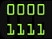
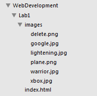
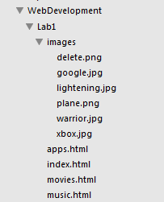
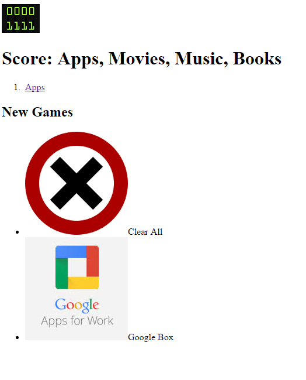
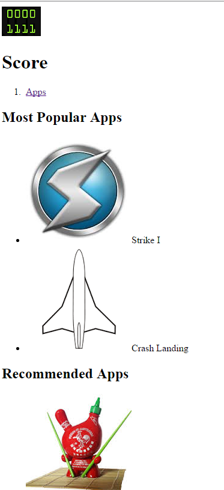
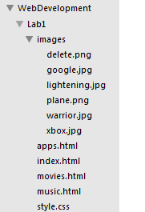
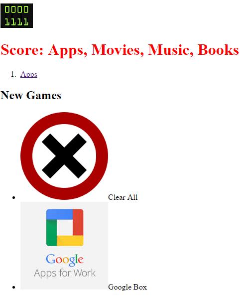

Objectives
The labs are where you will do the real learning in this module. In Lab0-01 you will become familiar with the editor Sublime. We will then use this editor to create a simple multi-page web site containing a small variety of text, images and links. In this lab we will explore some of the basic features of CSS, including colours, font and interesting techniques for setting styles across entire sections of a page.
Setup
Instructions for working in Walton Building PC Labs:
If you are working on the workstations in the IT Building, choose Sublime Text 2 from the programs menu.

locate the C: Drive in the Explorer. Navigate to C:\dev\eclipse\javascript folder. Run (double click on) the "Eclipse" application.
Proceed with the next step of the lab.
Instructions for working on your own laptop
Download and install Sublime Text 2 from
Select the appropriate download for your laptop (OS, Windows, Linux)
Install the following:
This site has some useful tutorial videos in how to use Sublime Text 2. You should at least watch the first 2.
- <http://code.tutsplus.com/courses/perfect-workflow-in-sublime-text-2
We recommend using Chrome as your web browser.
First Project
If you are working on a pc in the IT lab, create a new folder on either your G drive or on your usb drive, name the folder WebDevelopment, inside that folder create another folder called Lab1.
Open Sublime and choose Open Folder from the File menu. Navigate to the WebDevelopment folder and choose click OK.
In sublime click on the WebDevelopment folder, you should see the Lab1 folder appear.

Chose New File from the File menu, a new blank page should appear in the sublime window. Click Save on the File menu and name the file index.html, save it into the Lab1 folder. You should see the file name appear in the left panel in sublime.

Now in File Explorer create another folder in Lab1 that is called images

Next you are to save 7 images into the images folder:
Here are the seven image files:

Right click on each one and choose Save As. Make sure you save them into the Images folder.
It is worth making sure your folder structure is the same as this:

The WebDevelopment folder will hold a folder for each lab you work on for this module. For today the Lab1 folder will contain at least one .hmtl file as well as an images folder which in turn contains 6 images.
HTML pages
We are going to create a web site that is based on the Google Play site or the Apple app store. It will present mobile apps, music, and movies to the user.
Choose New File from the File menu, next choose Save from the file menu and name it apps.html
Do the same for a file named movies.html and one called music.html
You should now have the following folder and file structure:

Next you will write some html code. Copy and paste in the following code:
index.html page content
<!DOCTYPE HTML>
<html>
<head>
<title>APP Store</title>
</head>
<body>
<img src="images/score.png"/><h1>Score: Apps, Movies, Music, Books</h1>
<ol>
<li><a href="apps.html">Apps</a></li>
</ol>
<h2>New Games</h2>
<ul>
<li><img src="images/delete.png"/>Clear All</li>
<li><img src="images/google.jpg"/>Google Box</li>
</ul>
</body>
</html>
apps.html page content
<!DOCTYPE HTML>
<html>
<head>
<title>APP Store</title>
</head>
<body>
<img src="images/score.png"/><h1>Score</h1>
<ol>
<li><a href="apps.html">Apps</a></li>
</ol>
<h2>Most Popular Apps</h2>
<ul>
<li><img src="images/lightening.jpg"/>Strike I</li>
<li><img src="images/plane.png"/>Crash Landing</li>
</ul>
<h2>Recommended Apps</h2>
<ul>
<li><img src="images/warrior.jpg"/>Chop</li>
<li><img src="images/xbox.jpg"/>XBox mania</li>
</ul>
</body>
</html>
Remember to save your files in sublime by clicking File -> Save All
Test these pages out by opening the index.html in your browser window. Do all of the images display? Does the link to the apps.html page work?


CSS
We will now introduce a stylesheet into our project. Stylesheets are usually maintained in separate files with the .css extension. Choose New File from the File menu and name it 'style.css'.
The folder structure now looks like this:

We bind this file into the project by 'linking' it to our home page. This must be incorporated into the \<head> element of each page. Currently index.html head section looks like this:
<head>
<title>APP Store</title>
</head>
We can extend it with a new element to link to the stylesheet. The head section of the index.html home page should now look like this:
<head>
<title>APP Store</title>
<link type="text/css" rel="stylesheet" href="style.css" media="screen" />
</head>
Save your files and open the index.html page in your browser and keep this window open. There is no visible effect on our page yet until we introduce a rule into the stylesheet.
Type all of the following into the style.css file (note the American spelling of the word color) :
h1
{
color: red;
}
Save all your files. Refresh the index page in your browser and see the result of writing this one css rule.

Experiment with the following rules, introducing them one at a time and one after each other in the file:
body
{
font-family:sans-serif;
}
replace the first one you wrote that changed the h1 colour to red with the following:
h1, h2
{
color: gray
}
Add this as another rule to the file:
h1
{
border-bottom: 1px solid black;
}
Your css file now looks like this:

Exercises
Solution So Far..
This is an archive (zip file) of a solution to the lab so far:
Index.html
Just to get used to the editor, create a few more new games in the 'index.html', perhaps you can locate content from some web source (including images). Try to identify and replicate the way the code is indented in the existing content.
New pages
Incorporate new content into the movies.html and music.html pages. It can contain any content you think would be useful. Make sure you add the hyperlinks to the home page and to the two pages so that you can navigate to them from the index.html page and back to the index.html page. Take a look at Google's play store or Apple's app store for ideas.
Link the CSS file to all pages
Currently you may not have the CSS file 'linked' to all pages. i.e. only index.html is styled with the css rules you have defined. See if you can link the other pages now.
Lists
In this lab you used the elements \<ul> and \<ol>
Investigate the use of and differences between these elements here:
Images
Investigate reducing the size of the images, currently they are 176*176. Try using an image editor to reduce their size to 50% smaller. It is important to have some understanding of using an image editor. The most basic available on all windows pc/laptop's is Paint which has a resize option on the toolbar.